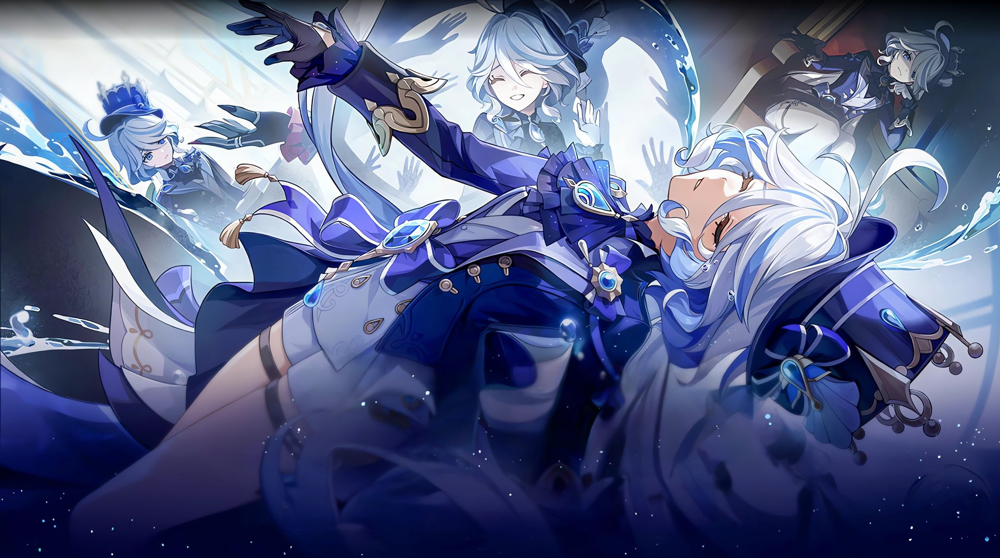

Census Designated is the sophomore album by Jane Remover, an American musician from New Jersey who is well known for her debut album Frailty along with her old artist aliases she used on SoundCloud. I stumbled across her music when I heard her song "movies for guys", which is a song about falling in love with a crush who you know can never love you back, so you force yourself to hate them. While her debut album has more of an electronic dance sound with wildly changing genres, Census Designated pulls back on the harsh electronic noise that was prevalent in her previous works. This album feels more intimate than the previous album, with Remover seeming to focus more on specific events that might have happened in her life. This album also has a much stronger focus on the lyricism and every song is pretty lengthy with Jane Remover's vocals appearing in every song. However, it seems this album lets go of some of the autotune that was apparent in her previous album. A large majority of the songs have a drop where the song shifts and becomes more rock heavy that tends to mix into electronic warbling. This album's sound in general just reminds me of my own life, and feels almost nostalgic in a way. I believe that the album cover beautifully encapsulates the feeling I get while listening.
With the recent release of Fontaine, Genshin Impact has yet to release the archon, Furina, who has yet to play a major role in the story thus far. The next update should release in the next few weeks, and with it, Furina will be a playable character who's story will get expanded upon.

One of the main questions on my mind is how well she will perform banner wise. We have seen a trend in the banner sales of every archon, where the next one sells better than the next. However, it seems like the banners we have had since the start of Fontaine have not been selling as well as some of the previous banners. One thought that comes to my mind is that people are likely saving up their funds for the upcoming archon, as each archon gives new unique ways to play the game and tend to shift the meta.
Archon
Element
Sales
Venti
Anemo
$9.8 M
Zhongli
Geo
$7.7 M
Raiden Shogun
Electro
$21 M
Nahida
Dendro
$22 M
Another thing to consider is that Fontaine has been releasing almost entirely male characters so far, which tend to sell less than female characters. This could also explain why Venti and Zhongli sold less, but the game had also just released when those two characters were patched into the game. Personally, I have saved up my fair share for the next archon, and I hope that she delivers gameplay wise.